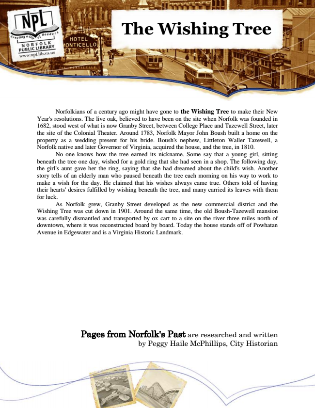

The Wishing Tree
Norfolkians of a century ago might have gone to the Wishing Tree to make their New Year's resolutions. The live oak, believed to have been on the site when Norfolk was founded in 1682, stood west of what is now Granby Street, between College Place and Tazewell Street, later the site of the Colonial Theater. Around 1783, Norfolk Mayor John Boush built a home on the property as a wedding present for his bride. Boush's nephew, Littleton Waller Tazewell, a Norfolk native and later Governor of Virginia, acquired the house, and the tree, in 1810.
No one knows how the tree earned its nickname. Some say that a young girl, sitting beneath the tree one day, wished for a gold ring that she had seen in a shop. The following day, the girl's aunt gave her the ring, saying that she had dreamed about the child's wish. Another story tells of an elderly man who paused beneath the tree each morning on his way to work to make a wish for the day. He claimed that his wishes always came true. Others told of having their hearts' desires fulfilled by wishing beneath the tree, and many carried its leaves with them for luck.
As Norfolk grew, Granby Street developed as the new commercial district and the Wishing Tree was cut down in 1901. Around the same time, the old Boush-Tazewell mansion was carefully dismantled and transported by ox cart to a site on the river three miles north of downtown, where it was reconstructed board by board. Today the house stands off of Powhatan Avenue in Edgewater and is a Virginia Historic Landmark.
Pages from Norfolk's Past are researched and written by Peggy Haile McPhillips, City Historian